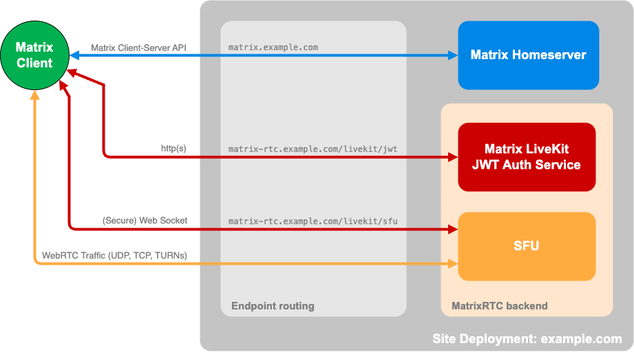
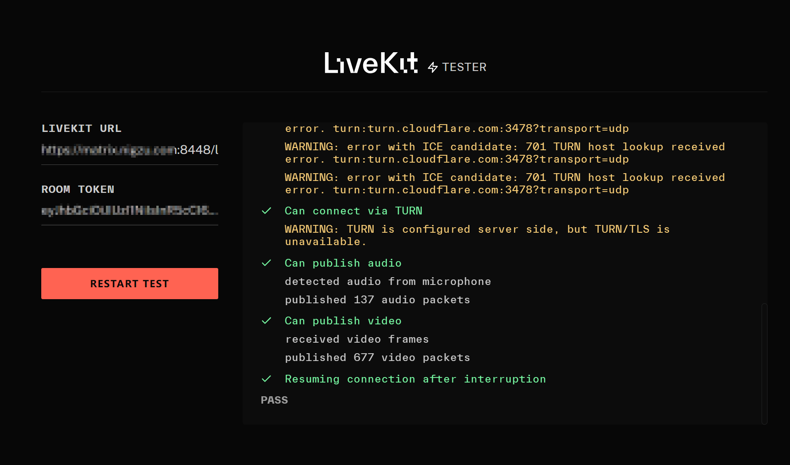

Matrix 通信网络协议最常用的客户端 Element 过去一直使用免费的 Jitsi 作为群组视频会议组件。一对一音视频通话则相对复杂：如果双方客户端具有公网 IP，则可以建立点对点连接；否则需要通话发起方的服务端托管 TURN 服务来绕过网络地址转换 (NAT)，中继 WebRTC 连接。
现在这一情况已得到改善。Elment.io 开源了原生的 Matrix 视频会议应用程序 element-call。它的优势在于端到端加密、流畅性，以及基于 LiveKit 的可扩展后端；缺点是与 Jitsi 相比功能仍较为简陋，例如缺少背景虚化、主持功能等。
Element Call 客户端组件现已内置于 Element 桌面和网页端，并在新一代移动端 Element X 上作为唯一的通话组件。这意味着从 Jitsi 和 TURN 发起的呼叫无法在 X 移动端显示。该组件需要连接到 MatrixRTC 后端才能使用。根据官方博客 ，从 2025 年 5 月开始，Element 将不再为社区提供免费的 MatrixRTC 后端服务，因此 Matrix 站长需要自行搭建。不过这并不是紧迫的任务，因为 Element X 功能尚不完善，还不足以完全替代旧的移动端。
本教程适用于在家庭服务器（如 NAS）上自建该服务。
服务概述
Element Call 包含两个服务：Matrix Livekit JWT 身份验证服务和 Livekit SFU WebSocket 信令连接。它们的通信流程如下：

当用户从客户端发起呼叫时，首先会访问 matrix 域名的 /.well-known/matrix/client 路径查找后端 Livekit JWT 服务地址。JWT 将为指定房间生成具有特定身份的 JWT 令牌，随后客户端与 Livekit SFU 建立安全的 WebSocket 通信，SFU 使用 WebRTC 端口进行实时语音或视频对话。
因此，Livekit JWT 需要向客户端开放一个 Web 端口，Livekit SFU 需要开放一个 WebSocket 端口。此外，Livekit SFU 还需要开放一组 UDP 端口范围（或单个 UDP 端口，但不建议）和一个 TCP 端口用于 WebRTC。如果 Livekit SFU 使用内置的 TURN 服务器，则还需开放 TURN 端口（本教程将使用第三方服务替代）。
使用 TURN 改善连接（非必要）
由于家庭网络的公网地址不固定，且运营商可能在上游机房施加限制（如阻止 UDP 连接），LiveKit 可以使用后备的 TURN 服务改善连接质量。LiveKit 包含一个嵌入式 TURN 服务器，但这个服务器与 LiveKit 身份绑定，没有独立的用户密码，无法单独提供（例如作为 Synapse 内置的通话服务）。LiveKit 也可以使用第三方 TURN 服务，如 Coturn，这需要一台 VPS；或者使用 Cloudflare TURN 服务器。结合 Cloudflare 优质的 CDN 线路带宽，即使在网络高峰期也能保证视频通话质量。况且 LiveKit 并不完全依赖 TURN，免费的 1000GB 流量已绰绰有余。
在 Cloudflare Dashboard 创建服务后，按照步骤使用 API 创建 TURN 的用户名和凭证。需要注意的是，通过 API 创建的令牌可能有有效期限制。尽管 TLS 参数可以设置较大的数值，但默认过期时间仅为一天。如果确实如此，则需要编写脚本每天重新创建令牌，并将其更新到 LiveKit 和 Matrix homeserver 中。
配置 LiveKit
生成配置
使用 LiveKit 的配置生成工具为您的域创建自定义配置：
docker pull livekit/generate
docker run --rm -it -v$PWD:/output livekit/generate选项可随意设置，该工具仅用于生成密钥和令牌。密钥将填入配置中，令牌用于测试，例如：
root@xxx:~# docker run --rm -it -v /synapse/livekit:/output livekit/generate
Generating config for production LiveKit deployment
✔ LiveKit Server only
Primary domain name (i.e. livekit.myhost.com): livekit.example.com
TURN domain name (i.e. livekit-turn.myhost.com): turn.example.com
✔ Let's Encrypt (no account required)
✔ latest
✔ no - (we'll bundle Redis)
✔ Skip
Server URL: wss://example.com
API Key: xxxxxx
API Secret: xxxxx
Here's a test token generated with your keys: xxxxx
...修改 livekit.yaml 配置
# livekit sfu 的 websocket 端口
port: 7880
bind_addresses:
- "0.0.0.0"
rtc:
# livekit sfu 的 tcp 端口
tcp_port: 17882
# livekit sfu 的 webrtc udp 端口范围
port_range_start: 50201
port_range_end: 50400
# 对于大多数云环境，如果主机有公网 IP 但进程无法直接访问，应将 use_external_ip 设置为 true。
# LiveKit 会尝试使用 STUN 发现真实 IP，并将该 IP 通告给客户端。
use_external_ip: true
# 第三方 turn，推荐 cloudflare 或 coturn
turn_servers:
- host: turn.cloudflare.com
port: 3478
# tls, tcp, or udp
protocol: udp
# Livekit 配置第三方TURN服务不支持静态共享密钥
# 用从 cloudflare api 中获取的用户名和凭证
username: "xxx"
credential: "xxx"
logging:
level: info
keys:
# 这个生成的不要动
key: "yoursecretkey"
# redis:
# # redis 有助于从故障中恢复，不必要
# address: localhost:6379
# db: 5
# # username: xxx
# # password: xxx
# 内建的 turn，默认不启用
turn:
enabled: false
domain: localhost
cert_file: ""
key_file: ""
tls_port: 5349
udp_port: 443
external_tls: true修改 Matrix 配置
在 Synapse homeserver.yaml 中：
experimental_features:
# MSC3266：房间摘要 API。用于跨服务器敲门功能
msc3266_enabled: true
# MSC4222：syncv2 state_after 所需。允许客户端
# 正确追踪房间状态。
msc4222_enabled: true
# MSC4140：延迟事件需要正确的呼叫参与信令。如果禁用，很可能你会在矩阵房间里被卡住
msc4140_enabled: true
# 按照 MSC4140，允许已发送事件的最大延迟时长。
max_event_delay_duration: 24h
rc_message:
# 这需要至少匹配端到端加密密钥共享的频率，并留有一定余量
# 注意密钥共享事件是突发性的
per_second: 0.5
burst_count: 30
rc_delayed_event_mgmt:
# 这需要至少匹配心跳频率，并留有一定余量
# 当前心跳为每 5 秒一次，换算为 0.2 次/秒
per_second: 1
burst_count: 20
# 如果你想用 Cloudflare TURN 服务器作为 Matrix 旧客户端的通话服务，配置下面的参数。
# 如果改用本站 coturn Docker Compose 方案，则 turn_uris 换成自建 coturn 域名，
# coturn relay 端口统一按 50000-50200/udp 放行。
turn_uris: ["turn:turn.cloudflare.com:3478?transport=udp","turn:turn.cloudflare.com:3478?transport=tcp","turns:turn.cloudflare.com:5349?transport=tcp","turn:turn.cloudflare.com:53?transport=udp","turn:turn.cloudflare.com:80?transport=tcp","turns:turn.cloudflare.com:443?transport=tcp"]
turn_username: "xxx"
turn_password: "xxx"创建容器
# 在 matrix synapse 的 docker-compose.yaml 项目组中添加这些服务，或者单独创建它们
auth-service:
image: ghcr.io/element-hq/lk-jwt-service:latest
container_name: element-call-jwt
hostname: auth-server
# host 模式下不需要端口映射，如果是 bridge 模式则需要
network_mode: host
environment:
- LIVEKIT_JWT_PORT=8080
# 这里填入 LIVEKIT SFU 的 WebSocket 反向代理后的地址
- LIVEKIT_URL=https://matrix.homeserver:port/livekit/sfu
# 两种 WebSocket 地址模式，和上一种模式的区别是上一种模式将 sfu 服务反代到 matrix homeserver 的路径，而这个地址则是在单独的 nginx server 中反代 sfu，具体见下文
# - LIVEKIT_URL=ws://yourdomain:port:7880
- LIVEKIT_KEY=和 livekit.yaml 配置一致
- LIVEKIT_SECRET=和 livekit.yaml 配置一致
## - LIVEKIT_LOCAL_HOMESERVERS=domain.com #限制可使用的家庭服务器，逗号分隔
restart: unless-stopped
# ports:
# - 8070:8080
livekit:
image: livekit/livekit-server:latest
container_name: element-call-livekit
# 推荐用 host 模式避免映射大量端口
network_mode: host
command: --config /etc/livekit.yaml
# ports:
# - 7880:7880/tcp
# - 17882:17882/tcp
# - 50201-50400:50201-50400/udp
restart: unless-stopped
volumes:
- ./livekit/livekit.yaml:/etc/livekit.yaml:ro
# 可选服务
# redis:
# image: redis:7-alpine
# command: redis-server /etc/redis.conf
# restart: unless-stopped
# network_mode: "host"
# volumes:
# - ./redis.conf:/etc/redis.conf执行 docker compose up -d 创建容器。
配置 Nginx 反向代理、防火墙及端口转发（家庭服务器）
由于客户端需要从外部访问服务端，因此需要为 Livekit JWT 的 Web 端口和 Livekit SFU 的 WebSocket 端口设置反向代理。
在家庭服务器上，有两种反向代理方式：一种是为每个端口指定单独的代理端口；另一种是在 nginx 原有端口代理 server 中添加代理路径。本教程介绍第二种方法：将 JWT 和 SFU 端口代理挂载到 matrix homeserver 的 nginx server 指定路径下：
location ^~ /livekit/jwt/ {
proxy_set_header Host $host;
proxy_set_header X-Real-IP $remote_addr;
proxy_set_header X-Forwarded-For $proxy_add_x_forwarded_for;
proxy_set_header X-Forwarded-Proto $scheme;
# JWT Service running at port 8080
proxy_pass http://localhost:8080/;
}
location ^~ /livekit/sfu/ {
proxy_set_header Host $host;
proxy_set_header X-Real-IP $remote_addr;
proxy_set_header X-Forwarded-For $proxy_add_x_forwarded_for;
proxy_set_header X-Forwarded-Proto $scheme;
proxy_send_timeout 120;
proxy_read_timeout 120;
proxy_buffering off;
proxy_set_header Accept-Encoding gzip;
proxy_set_header Upgrade $http_upgrade;
proxy_set_header Connection "upgrade";
# LiveKit SFU websocket connection running at port 7880
proxy_pass http://localhost:7880/;
}执行 nginx -t 和 nginx -s reload。
注意：在这种反向代理模式下，proxy_pass 的地址需要在端口最后添加斜杠 /。在 Nginx 的 proxy_pass 指令中，末尾是否包含斜杠会影响请求的转发行为。我们希望当客户端请求如 https://matrix.example.com:8448/livekit/sfu/get 地址时，nginx 将其转发到 http://localhost:7880/get，即忽略路径 /livekit/sfu。如果末尾不加 /，nginx 转发会变成完整路径追加：http://localhost:7880/livekit/sfu/get。客户端访问 SFU、JWT 服务器时的地址为 matrix 的 homeserver 端口（如 https://matrix.example.com:8448）加上中间路径（如 /livekit/sfu）和请求路由（如 /get）。nginx 转发时去掉中间路径，SFU 服务的路径由上面 docker 创建时的 LIVEKIT_URL 变量指定，而 JWT 服务的路径由下面 MatrixRTC 后端公告指定。
不要忘记配置网络防火墙开放端口。如果是家庭服务器，还需要在路由器上设置端口转发。
本文参数和后续 Docker Compose 文章保持一致：LiveKit 的 UDP 媒体端口使用 50201-50400/udp，LiveKit TCP fallback 使用 17882/tcp。如果同时部署自建 coturn，coturn relay 使用 50000-50200/udp，两段连续且不重叠。
配置完成后，可以访问 LiveKit Connection Tester 网站测试 livekit sfu 服务是否正常，使用前面配置生成的 tokens。

配置 MatrixRTC 后端公告
Element Call 在建立端到端通信前需要访问 matrix 域名的 /.well-known/matrix/client 路径查找后端 livekit 服务地址，例如 https://example.com/.well-known/matrix/client。由于家庭网络无法开放 443 标准 HTTPS 端口，与前面 TURN 配置类似，这需要一台 VPS 提供相应配置，用 nginx 返回 json 并反向代理 matrix 的 homeserver。
这里推荐一种免费方案：Cloudflare Worker。前提是在 Cloudflare 托管自己的域名 DNS 解析服务。进入 Dashboard -> Workers 和 Pages 创建服务。在 worker.js 中写入以下脚本：
export default {
async fetch(request, env) {
return await handleRequest(request)
}
}
export async function handleRequest(request){
const url = new URL(request.url)
const headers = {
headers: {
"content-type": "application/json;charset=UTF-8",
"Access-Control-Allow-Origin": "*",
"Access-Control-Allow-Methods": "GET, POST, PUT, DELETE, OPTIONS"
}
}
//your.domain:port
const serverJson = {
"m.server": "your.domain:port"
}
const clientJson = {
"m.homeserver": {
"base_url": "https://your.domain:port"
},
"org.matrix.msc4143.rtc_foci":[
{
"type": "livekit",
"livekit_service_url": "https://your.domain:port/livekit/jwt"
},
{
"type": "livekit",
"livekit_service_url": "https://livekit-jwt.call.matrix.org"
},
{
"type": "nextgen_new_foci_type",
"props_for_nextgen_foci": "val"
}
]
}
var msg
if (url.pathname.endsWith(".well-known/matrix/server")) {
msg = JSON.stringify(serverJson)
}
if (url.pathname.endsWith(".well-known/matrix/client")) {
msg = JSON.stringify(clientJson)
}
if (msg) {
return new Response(msg, headers);
} else {
return new Response('Not Found.', { status: 404 })
}
}将 your.domain:port 替换为自己的 matrix 服务器地址。这个脚本还提供 .well-known/matrix/server 配置。每天 100,000 个请求的限额足够小型站点使用。
然后在该 Worker 的设置 -> 域和路由中，添加自定义路由：https://your.domain/.well-known/matrix/*。
您可以在浏览器访问 https://your.domain/.well-known/matrix/client 地址，查看是否返回 Worker 中填写的 json 配置。一般来说，部署后会立即生效。
现在 Element Call 应该可以正常使用了。Element Web/Desktop 客户端上可能需要开启相应的实验性设置。